![]()
Objective
This guide explains how to integrate your LXC container with an external VPN service to enhance the privacy and security of your containerized applications.
Proxmox Virtual Environment: A server management platform that allows you to deploy, manage, and monitor LXC containers. For more information visit Proxmox VE.
TTeck’s Proxmox Helper Scripts: These scripts make it easier to create and manage LXC containers. Learn more here.
In this guide, we will configure a qBittorrent LXC container to use WireGuard VPN as its network gateway. I selected AirVPN as the VPN provider due to its support for peer-to-peer (P2P) connections and port forwarding capabilities. However, the concepts and steps outlined here can be adapted to other VPN services and applications according to your needs.
Please use this guide responsibly. I’m not an expert and cannot guarantee the security of your setup.
Setup
WireGuard LXC
First, set up WireGuard LXC to integrate your container with the VPN:
Installing WireGuard LXC: Start by executing the script on your host machine and accept the default settings.
bash -c "$(wget -qLO - https://github.com/tteck/Proxmox/raw/main/ct/wireguard.sh)"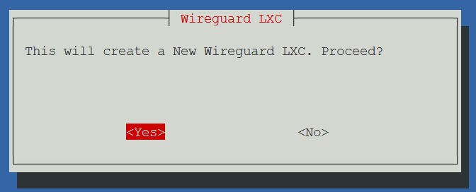
Figure 1: Initiating WireGuard LXC setup. After running the script, install necessary dependencies:
apt install openresolv apt-get install iptables-persistentAcquiring the VPN Configuration:
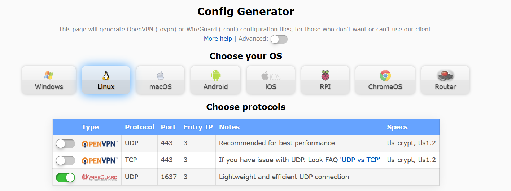
Figure 2: Generating AirVPN WireGuard configuration. - Select Linux, the WireGuard protocol, and your preferred server location. This will generate a *.conf file with your VPN configuration.
[Interface] Address = 10.178.17.78,fd7d:76ee:e68f:a993:124c:7d1d:869c:84e7 PrivateKey = [PRIVATE_KEY] MTU = 1320 DNS = 10.128.0.1, fd7d:76ee:e68f:a993::1 [Peer] PublicKey = PyLCXAQT8KkM4T+dUsOQfn+Ub3pGxfGlxkIApuig+hk= PresharedKey = [PRIVATE_KEY] Endpoint = america3.vpn.airdns.org:1637 AllowedIPs = 0.0.0.0/0,::/0 PersistentKeepalive = 15Configuring WireGuard with AirVPN:
- Check your current public IP address:
curl ifconfig.me- Update the WireGuard configuration with AirVPN’s details (e.g.,
wg0.conf, but you can use any name if you are setting up multiple VPNs on the same LXC):
nano /etc/wireguard/wg0.conf- Apply the new configuration and restart WireGuard:
wg-quick down wg0 wg-quick up wg0 wg show- Confirm the VPN is working by checking your new public IP address:
curl ifconfig.meYou should observe an IP address different from the one initially confirmed, indicating successful VPN integration.
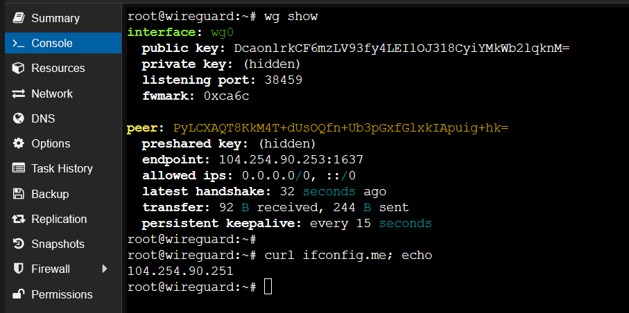
Figure 3: Verifying WireGuard VPN functionality
qBittorrent LXC
Next, set up qBittorrent LXC for secure torrenting through the VPN:
Installing qBittorrent LXC: Start by executing the script on your host machine and accept the default settings.
bash -c "$(wget -qLO - https://github.com/tteck/Proxmox/raw/main/ct/qbittorrent.sh)"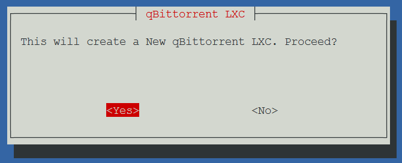
Figure 4: Launching the qBittorrent LXC setup. After installation, access qBittorrent through your web browser at the provided URL:
qBittorrent should be reachable by going to the following URL. http://192.168.0.227:8090
Network bridge
Creating a network bridge in Proxmox ensures direct communication between the WireGuard and qBittorrent containers:
Creating a Proxmox Network Bridge:
- Start by creating a network bridge in the Proxmox interface, which may vary based on your setup.
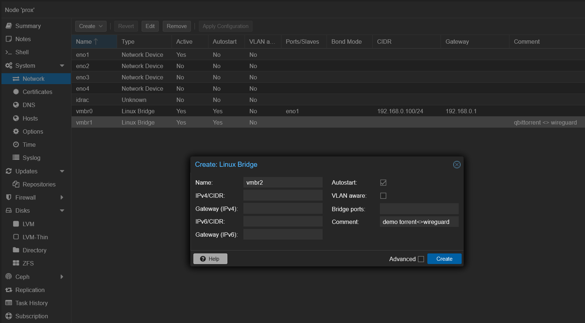
Figure 6: Configuring a new network bridge in Proxmox. - Apply the changes to activate the new network bridge.
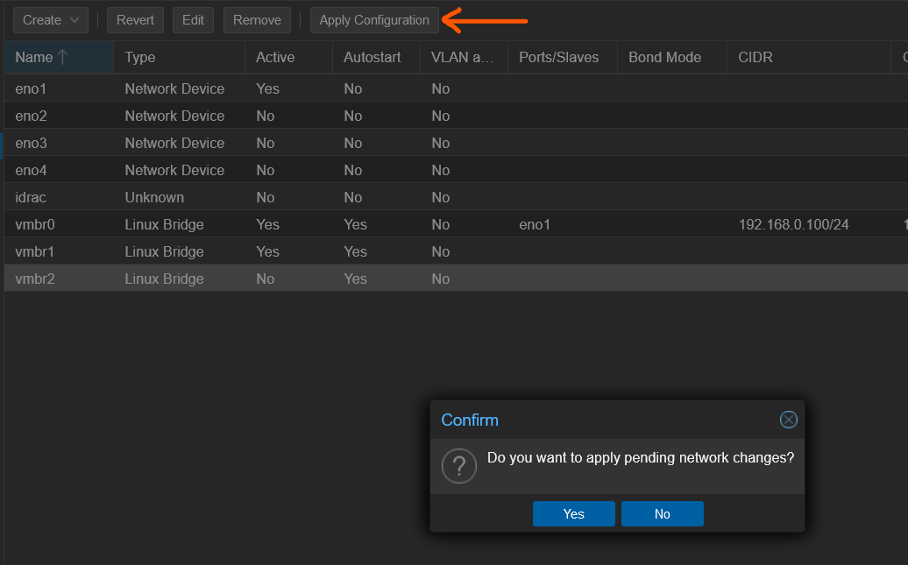
Figure 7: Finalizing network bridge setup. Integrating LXCs with the Network Bridge:
Assign the new bridge as a network device for both the WireGuard and qBittorrent LXCs, setting static IP addresses on this new subnet:
- WireGuard LXC:
10.10.10.1/24 - qBittorrent LXC:
10.10.10.2/24
- WireGuard LXC:
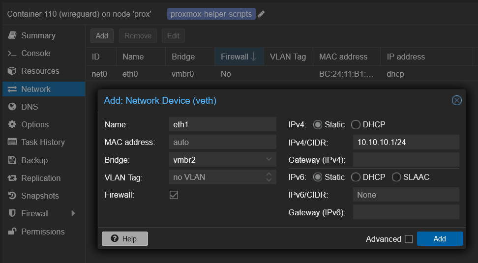
Figure 8: Assigning the network bridge to LXCs. - Test the integration by pinging the qBittorrent LXC from the WireGuard LXC.
ping 10.10.10.2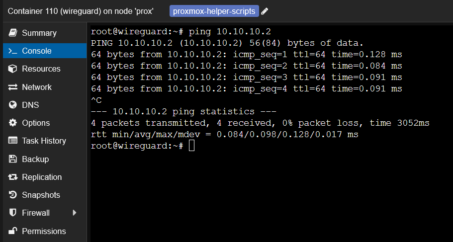
Figure 9: Verifying connectivity between LXCs. Gateway Configuration:
- WireGuard LXC:
- Enable IP forwarding and establish NAT rules:
echo "net.ipv4.ip_forward=1" | tee -a /etc/sysctl.conf sysctl -p iptables -t nat -A POSTROUTING -o wg0 -j MASQUERADE- Save the iptables configuration to persist across reboots:
bash netfilter-persistent save
- qBittorrent LXC:
- Define the WireGuard LXC as the default gateway. Update
/etc/network/interfaceswith the gateway and DNS settings.
auto lo iface lo inet loopback auto eth0 iface eth0 inet static address 192.168.0.227 # [Your qBittorrent LXC's static IP] netmask 255.255.255.0 auto eth1 iface eth1 inet static address 10.10.10.2/24 netmask 255.255.255.0 gateway 10.10.10.1 dns-nameservers 1.1.1.1 post-up ip route add default via 10.10.10.1 dev eth1 post-up ip route del default via 192.168.0.1 dev eth0 || trueTipI recommend using a static IP address for the qBittorrent LXC as DHCP can cause issues with the setup’s persistence across reboots.
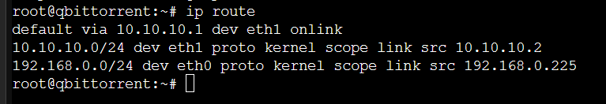
Figure 10: Default routing through the VPN bridge. Restart network services to apply changes.
Confirm the successful gateway configuration by verifying the IP address is now resolved through the VPN:
ping -c 4 google.com # Test DNS resolution curl ifconfig.me # Should return the WireGuard IP- In case of any configuration issues, try bypassing Proxmox’s configuration checks:
touch /.pve-ignore.resolv.conf touch /etc/network/.pve-ignore.interfaces - Define the WireGuard LXC as the default gateway. Update
- WireGuard LXC:
qBittorrent client configuration
Finally, configure the qBittorrent client to ensure secure torrenting through the VPN:
Port Forwarding with AirVPN: Visit AirVPN’s port forwarding section to obtain a port to be forwarded through the VPN. This step is crucial for the qBittorrent client to establish direct connections with peers.
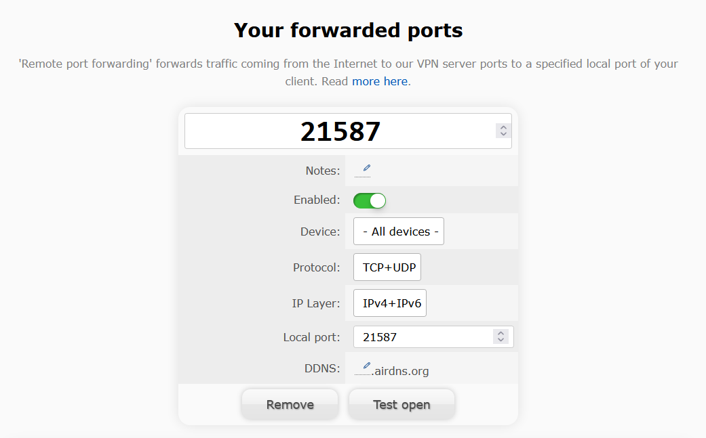
Figure 6: Acquiring a forwarded port from AirVPN. qBittorrent WebUI:
- Ensure the security of your qBittorrent interface by setting a strong password.
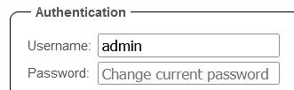
Figure 5: Configuring the webgui password for qBittorrent. Configuring the Listening Port: Access the settings in the qBittorrent WebUI and enter the listening port you received from AirVPN.
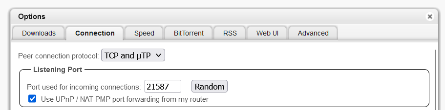
Figure 7: Setting the listening port in qBittorrent. Network Interface Binding:
- Bind qBittorrent to the network interface (
eth1) and IP address (10.10.10.2) corresponding to the VPN connection to ensure all traffic goes through the VPN.
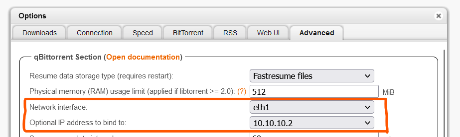
Figure 8: Binding qBittorrent to a specific network interface. - Bind qBittorrent to the network interface (
- Remember to click Save to apply your changes.
Verification
Follow these steps to confirm everything is functioning as intended:
Torrent Address Detection: Use ipleak.net to check that the IP address of your torrent client matches that of the VPN.
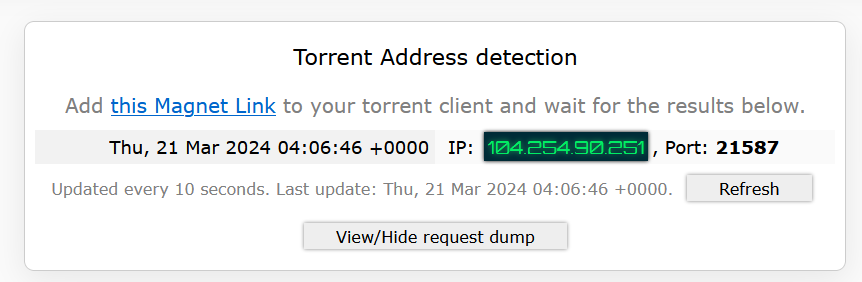
Figure 9: Verifying the VPN IP address with ipleak.net. Torrent Download Test: For a reliable test, I use a latest Arch Linux ISO torrent supplied by my university. Successful downloading confirms that your qBittorrent client is properly communicating with peers through the VPN. 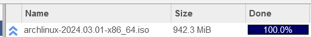
With these steps completed, your LXC container should now be securely integrated with a VPN.